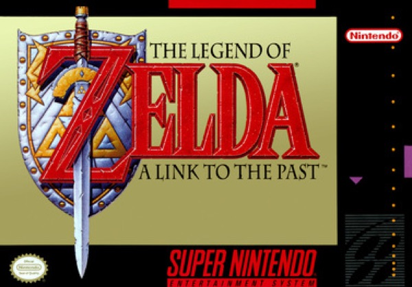

Adventure · 1991
The Legend of Zelda: A Link to the Past
Two overlapping worlds and the template every 2D Zelda still follows.

Cover: Wikipedia: The Legend of Zelda: A Link to the Past
Facts
- Released
- 1991-11-21
- Genre
- Action-Adventure
- Category
- Adventure
- Platforms
- Nintendo
- Developers
- Nintendo Entertainment Analysis & Development
- Publishers
- Nintendo